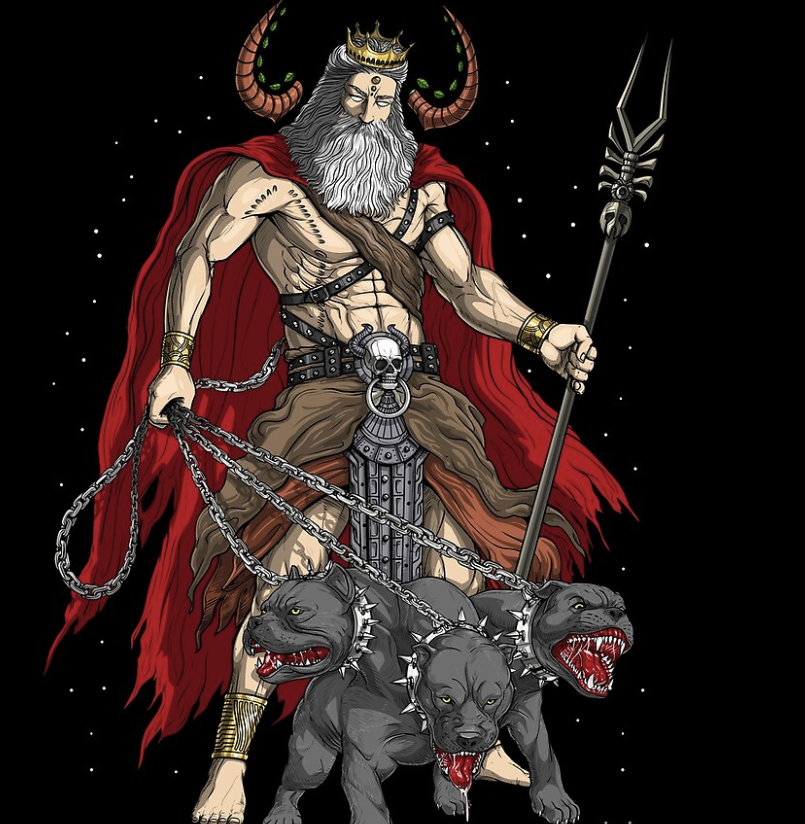

| Élément | Description |
|---|---|
| Origine | Cronos et Rhéa |
| Épouse | Perséphone |
| Enfants | Macaria, Zagreus |
| Attributs | Le casque d’invisibilité , trône d’ébène, clés des Enfers |
Lorsque Zeus renversa Cronos et les Titans, les trois frères tirèrent au sort le partage du monde.
Zeus reçut le ciel, Poseidon la mer, et Hadès hérita du monde souterrain.
Depuis son royaume obscur, il règne sur les âmes des morts.
Les Enfers ne sont pas un lieu de torture universelle, mais un domaine organisé où chaque âme reçoit le sort qu’elle mérite.
Les justes reposent dans les Champs Élysées, tandis que les criminels subissent leurs châtiments.
Redouté par les vivants, Hadès quitte rarement son royaume.
Son pouvoir est immense, mais il ne cherche ni conquête ni gloire.
Il veille simplement à ce que l’ordre naturel ne soit jamais brisé.
Son enlèvement de Perséphone marqua l’un des grands mythes du monde grec :
en la faisant reine des Enfers, il provoqua la colère de Déméter et donna naissance au cycle des saisons.
Silencieux et impénétrable, Hadès demeure le gardien de l’équilibre ultime : car sans la mort, il ne peut y avoir de vie.